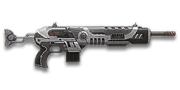

← Back to the TORQ-9 comparison
Sage Guide · Terran Republic · Combat Medic
The fastest-firing assault rifle a TR Combat Medic can carry — 857 rounds a minute of light, accurate bullets, a 40-round magazine and a reload so quick you'll barely notice it. It costs 1,000 certs, and it earns them with handling, not raw power.
Read this first — this gun is NOT a starter. The TORQ-9 costs 1,000 certs (or 699 Daybreak Cash). No faction is handed it for free. Your free TR starter assault rifle is the T1 Cycler — it kills 10 ms faster up close and is dead even with the TORQ-9 at mid-range. Buy the TORQ-9 because you want its fire rate, its reload and its long-range kill time, not because it's stronger on paper.
The one-line verdict: the highest fire rate of any assault rifle here, firing the lightest bullets — 125 damage that needs 8 hits up close, but arrives at 857 RPM through a tight 0.10° aimed cone, with a 2.12 s reload behind it. It rewards good aim and short bursts, and punishes spray-and-pray. Fight between 10 and 40 metres, aim for the neck, and it will carry you.

The TORQ-9 · Terran Republic · 40-round magazine · 1,000 certs
Every section below folds shut — tap a heading to open it. Section 01 starts open, because it's the lesson that saves you the most deaths.
Picture the scene, because you've probably lived it: you're sprinting across a courtyard, an enemy appears, and you do everything at once — hold the trigger down while you're still running, then press aim-down-sights (ADS) a split-second later, finger still down. The sight picture snaps in, it looks precise… and your bullets spray everywhere except the man in your crosshair. He kills you. It feels like the game cheated. It didn't — here's what actually happened.
Sprinting is the least accurate state in the game: your cone starts at 7.0° — fully bloomed, the widest it can ever be — and every hipfire shot widens it further (+0.1° per shot). Pressing ADS mid-hold changes the picture, not the cone.
You started firing from a sprint, from the hip. Sprinting is the least accurate state in the game: your cone of fire starts at 7.0° — fully bloomed, the widest it can ever be. Every shot you fire from the hip widens it further still (+0.1° per shot).
Then you pressed ADS mid-hold — and nothing reset. Aiming down sights does not shrink a cone of fire that is already bloomed. The scope only gives you a precise picture; the bullets keep flying out of the wide cone you built while running and hipfiring. That's the whole mystery: accurate-looking aim, wildly inaccurate gun.
Two timers stack the deck further: your gun needs about 0.3 s to settle after a sprint, and raising the sight itself takes ~0.15 s. Trigger held through all of it means your first half-second of fire is pure confetti.
1 · Feet. Let go of sprint (and the trigger, if you're already holding it). Stop, or drop into a strafe — anything but a full sprint.
2 · Sight. Press ADS and let the sight come up. This takes a heartbeat — that's fine, your Nano-Regen Device (F) is already healing you.
3 · Trigger. Now fire. Starting from the aimed cone of 0.10°, your first shots land where the dot points, and you control the bloom from zero instead of inheriting a maxed-out cone.
Stop → aim → fire. If you take one habit from this entire page, take this one. You'll practise exactly this rhythm in the simulator in section 04.
Three beats, always in this order. Stop first so the cone can shrink, aim second so the sight is up before any bullet leaves, fire third from a cone that starts at 0.10° instead of 7.0°. The whole sequence costs about half a second — your Nano-Regen Device buys it.
Every enemy infantry has 1,000 health (500 shield + 500 health). Your bullet does 125 damage up close, fading to 112 at long range. Headshots count double, leg shots count less (×0.9). There are only two damage tiers to memorise — no middle step, so past 10 m every kill takes exactly one extra chest bullet:
| Range | Damage | Head | Chest | Legs | Chest vs shielded Heavy |
|---|---|---|---|---|---|
| Close · 0–10 m | 125 | 4 | 8 | 9 | 12 |
| Mid · 10–55 m | 125→112 | 5 | 9 | 10 | 13 |
| Far · 55 m+ | 112 | 5 | 9 | 10 | 13 |
Perfect-accuracy times to kill: 4 headshots ≈ 0.21 s up close (5 headshots ≈ 0.28 s past 10 m), 8 chest shots ≈ 0.49 s up close and 9 chest shots ≈ 0.56 s past 10 m. In real fights you'll land maybe half your rounds — still, this is why the head matters so much on this gun: four head hits end it in a fifth of a second.
Full power to 10 m, then a steady slide to minimum at 55 m. The gold line shows Soft Point Ammunition, which stretches full power to 15 m.
One gun, four fighting styles. The right technique changes with distance — use the range finder below to see what your bullets do at any range, then learn the four bands underneath it.
How to fight hereAim down sights at the upper chest and neck. Fire in bursts of 5 — your recoil climbs into the head for free damage.
Aim: centre of the chest, from the hip. Keep moving.
Scoping in costs you time and slows you down — at arm's length that gets you killed. The TORQ-9's standing hipfire cone is 2.0° — respectable for an assault rifle, and at this distance the 0.28 m ring in section 05 covers the chest. Strafe side to side (A/D) while firing so you're hard to track, and let your Nano-Regen Device tick away the damage you do take.
Aim: neck / upper chest. Bursts of 5 rounds.
This is where the gun earns its keep: full 125 damage, mild recoil, and the fastest trigger finger in the class. Start your crosshair at the neck — the natural upward climb walks your shots into the head, and 4 head hits end the fight in about a fifth of a second (0.21 s).
Aim: chest. Bursts of 5 rounds, pause between them.
Damage is sliding toward 112 and your cone of fire blooms if you hold the trigger. Fire a burst, release for a split second to let accuracy reset, fire again. The recoil drifts up and to the right (8°/9°), so pull your mouse gently down and to the left. Crouch or stand still when you can — both tighten your shots.
Aim: chest. Taps of 3–5 rounds at exposed targets only.
At 112 damage you need 9 chest hits — a long, loud advertisement of your position. Take these shots at stationary or fleeing targets, medics reviving, and engineers on turrets. Otherwise, your better play is to close the distance behind cover. Knowing when not to shoot is a skill too.
Your accuracy is decided by two things before skill even enters it: what your body is doing (your stance sets the starting cone of fire) and what your finger is doing (holding the trigger grows that cone with every shot). The TORQ-9 has no fire-mode switch — full-auto only — so "firing modes" are something you do with your finger, not a setting on the gun.
| Stance | Starting cone | What it means for you |
|---|---|---|
| Sprinting | 7.0° | Maxed out — the widest the cone can be. This is the section 01 disaster: never start firing from a sprint. |
| Hipfire, moving | 2.5° | Walking or strafing from the hip. Fine inside ~8 m, leaks rounds past the target beyond it. |
| Hipfire, standing | 2.0° | Your point-blank default. The 0.28 m ring at 8 m in section 05 is this stance drawn out. |
| Hipfire, crouched | 1.5° | The tightest hipfire you have (2.0° if you crouch-walk). Crouch when holding a doorway from the hip. |
| Aimed (ADS), feet planted | 0.10° | Standing or crouched makes no difference here — twenty times tighter than hipfire. This is why section 01's order matters. |
| Aimed (ADS), strafing | 0.25° | The moving floor: strafing while aimed starts at 0.25°, two and a half times the planted cone — never write it as "still + bloom". You move at half speed (0.5×) while aiming, so strafe between bursts to stay hard to hit; plant your feet during each burst. |
Your still-accuracy window is 3 shots aimed (5 from the hip) — the ADAD window — but it is not free shots: the cone grows by the bloom with every shot from shot 1 (0.05° aimed, 0.10° from the hip), so burst at 5 and release.
| Mode | How your finger does it | Use it at |
|---|---|---|
| The mag dump | Hold the trigger and don't let go | Point blank only, or suppressing a doorway. Bloom maxes out fast — past ~8 rounds you're spraying, not aiming. |
| Bursts — the default | Hold for 5 rounds, release ~0.15 s, hold again. 6–8 rounds is fine while you're learning | Almost everything, 8–50 m. Each release resets the cone, so every burst starts at 0.10°. |
| Tap-fire | Short taps of 3–5, or single clicks, with a real pause between | 50 m and out, at exposed or stationary targets. Slow, but every round goes where the dot is. |
A target 30 m away, aiming down sights. Press and hold FIRE (mouse, touch, or hold Space with the button focused) and watch the holes walk wider the longer you hold — that's firing from an ever-growing cone. Release, let the cone reset, fire again. Aim for bursts of 5; 6–8 is tolerable while you're new. This practice window is shared by the whole Sage series: it's driven by a weapon profile plugged into the window — here the TORQ-9's (857 RPM, 0.10° starting cone, 0.05° bloom per shot, target at 30 m) — and the spread is drawn at true scale from those numbers.
Cone of fire — fills as you hold, empties when you release.
Your bursts will be graded here — green at 5 rounds, tolerable up to 8.
Some things are easier to show than to say. Here's what your bullets actually do: how wide hipfire spreads at 8 metres, what a good burst rhythm looks like, and what the 2x sight really changes. The hands-on version — holding the trigger yourself — is the practice window in section 04.
A full-size target 8 m away — an arm's-length room fight. The rings show where hipfire rounds land around your aim point (the chest). Sizes are drawn to scale from the gun's real cone-of-fire numbers.
Read it this way: standing still, the 0.28 m ring sits well inside the chest — most rounds hit a target this size, which is why hipfire works point-blank. But move and it grows to 0.35 m — about the chest's width — so the edge rounds start leaking past him, and the rings only grow with distance while the man doesn't. Past ~10 m that's rounds missing entirely: the exact moment to switch to aiming down sights, where the spread shrinks to a dot. (Ring sizes use the real geometry: spread diameter = 2 × distance × tan(cone ÷ 2).)
Every shot widens your cone of fire ("bloom"). Releasing the trigger for a heartbeat resets it. Same 18 rounds, two very different outcomes:
The target pattern is bursts of about 5 rounds — that's the ideal. Bursts of 6–8 are fine while you're new (call it newbie tolerance). Past that, the bloom (0.05° per shot aimed, 0.1° from the hip) keeps growing with every shot, so the extra bullets mostly decorate the wall behind your enemy instead of hitting him. Short bursts also leave you rounds for the second enemy — remember, the magazine is only 40.
No zoom. The target at 35 m is small but the view is wide open — you see the crate, the tower, and the next enemy coming. Fast to aim, nothing blocks your edges. Best inside ~40 m.
Same target, same 35 m — but he looks twice as tall, so placing shots on his chest and head gets much easier. The price: your view narrows to the round window, the crate and tower are gone, and close targets feel fast and huge. Best at 25–50 m.
That's the whole 30-cert decision from section 06 in one picture: 1x for awareness, 2x for precision. Most veterans carry both and swap per base — indoors 1x, open ground 2x.
Two things to know before you spend a single cert. First, this gun comes bare — iron sights, no rail attachment, no barrel attachment. Nothing is free here except the gun you already paid 1,000 certs for. Second, one thing doesn't exist for this gun at all: no Extended Magazine. Don't go looking for it — the 40-round magazine is what you get, so burst discipline (section 04) matters more here than on guns you can pad out. (It does take the Angled Forward Grip, the underbarrel launchers and the underbarrel shotgun — the widest attachment pool in the series so far.)
The plain NS iron sights the gun ships with. Usable, but the posts are chunky and they crowd the target at range.
Good: your first fights while you save 30 certs — it costs nothing and works.
Bad: anything past 30 m, where the posts hide the chest you're aiming at.
A clean illuminated red-dot sight with no zoom. Your default once you can afford it, and honestly your best all-round option.
Good: everywhere indoors and out to ~40 m — which is most PlanetSide fights.
Bad: picking out targets past 50 m; that's what the 2x is for.
Doubles your view magnification. Costs almost nothing — the price of one kill or two.
Good: open-field bases, tower fights, and your 25–50 m burst game. Swap between 1x and 2x per fight.
Bad: tight indoor rooms — the zoom makes close targets feel fast and huge.
Night-vision sight: enemies glow white against a dark view, and it sees through smoke.
Good: night fights, smoky doorways, spotting infiltrators by their outline.
Bad: daytime and long range — its view is short-ranged and washes out in bright light.
DMO / HDS (3.4x) and TMS / ACS (4x) — sniper-style magnification on an automatic assault rifle.
Good: almost nothing a beginner does — recoil magnifies too, and tunnels your vision.
Bad: any fight inside 30 m, which is where you'll spend your first hundred hours.
The TORQ-9's recoil is already mild. Plenty of veterans run this slot empty forever.
Good: your first weeks. Spend certs on your suit and shield first.
Bad: nothing — there's no downside to an empty slot.
Cuts vertical recoil by 30%. Costs you: hipfire spread grows 15%, and enemies see you on the minimap from 35 m farther away when you fire.
Good: if you mostly aim down sights at mid-range and the upward climb bothers you.
Bad: hipfire builds and sneaky play — you get louder on the map and sloppier from the hip.
Your shots bloom 20% slower while aiming — longer accurate bursts. But you move 20% slower while scoped, dropping your aimed strafe from 0.5× to 0.4×.
Good: holding a lane or doorway at 25–50 m, firing from a steady position.
Bad: aggressive room-clearing — the slower scoped strafe makes you an easier target, and it dulls your best trick.
Hipfire bloom grows 40% slower — much steadier hip spraying. But vertical recoil rises 20% when you do aim.
Good: a dedicated close-quarters build paired with the Laser Sight.
Bad: general play — it taxes the aimed shooting you'll do most.
You vanish from the minimap when firing and your shots are quiet. In exchange, damage starts dropping off 20 m sooner and bullets fly 15% slower (620 → 527 m/s) — harder to lead moving targets.
Good: flanking behind enemy lines, rooftop and tree work, solo play behind the front.
Bad: front-line fighting where everyone already knows where you are — you pay the damage cost for stealth you don't need.
Hides your muzzle flash so your own view stays clear at night — but you appear on enemy minimaps from 15 m farther away.
Good: night fights where your own flash blinds you. A comfort pick, nothing more.
Bad: as an early purchase — it changes no fight outcome. Buy it last, if ever.
Cuts side-to-side recoil by 25%, keeping your bursts on a single target. Tiny cost: weapon swap is 0.15 s slower.
Good: the default for aimed, mid-range play — the sideways walk is 0.5° here, middling for the class, so the grip genuinely helps keep bursts on one target.
Bad: nothing meaningful. It only stops helping if you never aim down sights.
Hipfire accuracy improves by a third (33% tighter cone). Replaces the Forward Grip — you can't have both.
Good: indoor point-holds and stairwell fights where you hipfire inside 8 m.
Bad: open bases — you give up aimed recoil control for a bonus you rarely use.
A torch whose beam reveals cloaked infiltrators. Toggle it with the attachment key (X by default).
Good: hunting a stalker infiltrator camping your capture point — sweep corners with it.
Bad: as your everyday rail — it gives zero accuracy help, and the beam advertises your position.
The first shot of each burst kicks 60% less — but side-to-side recoil rises 10% on everything.
Good: your first shot kicks 2.5× as hard as the rest, the sharpest first-shot kick in this guide — this grip takes most of that edge off every burst, so your 5-round bursts start flat.
Bad: longer bursts and mag dumps — the sideways penalty applies to every shot after the first, and the first-shot saving only matters if you actually release between bursts.
A single-shot underbarrel grenade launcher — one 40 mm grenade per trigger pull, toggled with Gear Slot 1. It takes the whole rail slot and adds 0.25 s to your equip time.
Good: flushing a point room or a doorway camper without swapping to a sidearm — one grenade through the door, then push.
Bad: one shot, then a slow reload — and while it's fitted you have no grip and no laser, so your rifle itself shoots worse all the time.
A single-shot underbarrel smoke grenade launcher, toggled with Gear Slot 1. Same rail-slot and equip-time cost as the grenade launcher.
Good: cover for a revive or a crossing — as a Medic, a smoke screen over a fallen squadmate is the closest thing to a free revive.
Bad: smoke blinds your own squad as well as the enemy, and it does nothing for your accuracy — a team-play tool, not a duelling one.
A single-shot underbarrel shotgun — one close-range blast, toggled with Gear Slot 1, same rail-slot and equip-time cost as the launchers.
Good: a panic button when a Light Assault lands on you inside 5 m — one shell can end a fight your rifle would lose.
Bad: one shell, then dead weight for the rest of the fight — and again, no grip and no laser while it's fitted.
Full 125 damage now reaches to 15 m instead of 10 m (the gold line on the chart above). Cost: bullets fly 10% slower (620 → 558 m/s).
Good: nearly always — most duels happen at 10–20 m, exactly where this extends your 8-shot kill.
Bad: long-range duels against runners, where the slower bullet needs more lead. A small price.
Bullets fly 10% faster (620 → 682 m/s) and minimum damage now holds out to 75 m instead of 55 m — but full damage ends 2 m sooner (10 m → 8 m).
Good: open-field fights at 40 m and out, where the faster bullet means less lead on moving targets.
Bad: close work — you shave 2 m off your best damage band for speed you don't need indoors.
Raises your minimum damage from 112 to 125 — your bullets never drop below full close-range power — but the magazine shrinks by 6 rounds, 40 → 34.
Good: mid- to long-range fights: at any distance you now kill in 8 chest shots / 4 headshots, exactly like point blank — your far kill time drops from 0.56 s to 0.49 s.
Bad: close-quarters multi-kills — 34 rounds at 857 RPM is gone in 2.4 s, and there's no extended magazine to buy the rounds back.
Removes the leg-shot damage penalty and adds 20% damage to leg hits — but cuts headshot damage by 50%. In plain words: legs stop being a weak spot and become your best target — a leg hit does 150 damage up close (more than a 125 chest hit), so a low spray that clips legs still kills in 7 shots. The price is your head: headshots drop from 250 to 125 damage, so a headshot kill takes 8 shots instead of 4.
Good: hipfire sprays at sprinting targets, where half your rounds land low anyway — it turns your worst hits into good ones.
Bad: anyone who aims for the neck and head — this ammo halves your best damage and doubles your headshot kill time. At 200 certs it's also the priciest ammo here; try it only after the core build is bought.
Costs below are attachments only — the gun itself is 1,000 certs on top of all of them, so even the "0 certs" build assumes you've already bought it.
0 certs attachments · Just bought the gun
What the 1,000 certs actually buy you. Genuinely usable — learn the gun on this before spending anything more.
230 certs attachments · Recommended
The best value in this whole guide. Covers every fight from a doorway to a tower courtyard.
330 certs attachments · Indoor brawler
Built to hipfire down stairwells and hold a capture point room. Swap back to the All-Rounder outdoors.
230 certs attachments · Flanker
No minimap blip, quiet shots, tight hipfire for the kills you take from behind. Weak in a fair fight — so don't take fair fights.
One Medic habit above all the rest: your Medical Applicator revives faster than any respawn — but a revive in the open is two deaths, not one. Clear the corner first (habits 1–3), revive second.
Your Nano-Regen Device (F key) heals you — and any ally standing near you — over time, and it only helps if it's running before the bullets arrive. Hear footsteps or expect a corner? Regen on, then peek: you'll be topping up through the whole fight while your enemy is only going down. It heals, it doesn't absorb — don't stand in the open expecting it to save you. (And remember what the enemy Heavy's shield does to your math: a shielded Heavy needs 12 chest shots to drop up close instead of 8.)
Headshots deal double damage: 4 kills up close versus 8 to the chest — 5 headshots past 10 m versus 9 to the chest. Don't aim at the head directly — aim at the neck and let the gun's natural upward climb carry shots two and three into the skull. It's the single biggest damage upgrade you own, and it's free.
Every shot widens your cone of fire. Holding the trigger past ~8 rounds at range means later bullets fly around your target, not into it. Five rounds is the ideal burst; release the trigger for a heartbeat between bursts — your accuracy resets and your hits per magazine roughly double.
Reloading with even 1 bullet left takes 2.12 s; an empty gun takes 2.92 s — four-fifths of a second standing defenceless. Count roughly: after one kill or ~25 rounds, duck behind cover and reload early. Treat the last 10 rounds as your emergency reserve, not your working magazine.
Walk with your crosshair at head height, pointed where an enemy's head will appear — a doorway edge, a corner, stairs. Most beginners lose fights in the half-second spent dragging the crosshair onto target. You move at half speed while aiming, so plant your feet for each burst and strafe between them — a Medic who keeps changing position between bursts is dramatically harder to headshot back, and your squad will thank you for staying alive to revive them.
Your damage and accuracy all shine at close-mid range — and so does your job: inside 40 m you're next to the squadmates you're healing and reviving. Sprint between cover, use buildings and rocks as stepping stones, and arrive at your range before opening fire. The player who chooses the range usually wins the duel — make it you.
Every gun has a price. Here's where the TORQ-9 pays — and the habit that covers each hole.
125 damage is the lightest bullet in the class: you need 8 chest shots up close and 9 past 10 m, more than any starter assault rifle. At 857 RPM the damage per second is still honest — about 1,785 up close, 1,600 at range — but every miss costs you a bigger slice of your 40-round magazine than it costs them.
Play around it: don't trade mag dumps. Aim for the neck — 4 headshots end the fight in 0.21 s, half your chest kill time — and burst in 5s so the rounds you do fire actually land.
Your stablemate the T1 Cycler carries the same 40, but the NC1, Pulsar and AR-100 all manage on 30 — so 40 is actually generous for an assault rifle. The catch is your fire rate: at 857 RPM a held trigger empties the magazine in 2.8 seconds, and there is no extended-magazine option on this gun at all — it simply doesn't exist.
Play around it: burst discipline (habit 3) and early reloads (habit 4). Your 2.12 s reload is quick — reloading often is the design, not a failure.
Past 55 m you're at 112 damage: 9 chest shots, 13 against a shielded Heavy, with bloom fighting you the whole way. Snipers and battle rifles own that ground.
Play around it: tap-fire at exposed targets only, and spend the rest of the time closing distance. Or fit Impact Ammunition (section 06): it flattens your minimum damage to 125, so far kills take 8 chest shots like close ones — at the cost of 6 rounds from the magazine. You're a Medic — the front line, next to your squad, is your address.
Its recoil angle is 8°/9° rightward, and the first shot kicks 2.5× as hard as the rest — the sharpest first-shot kick in this guide. In a long burst your aim walks off the target's right shoulder — you'll see this clearly in the VR drill below.
Play around it: pull your mouse down-left while firing, in the opposite direction of the climb. The Forward Grip already trims the sideways part by 25% — and if the first-shot kick still bothers you, the Angled Forward Grip (section 06) takes 60% off it.
A thousand certs buys a lot of Medical Applicator ranks, Nano-Regen ranks and suit slots. This gun does not out-damage the free T1 Cycler — up close the Cycler kills 10 ms faster, and at mid-range they're dead even. What the thousand buys is handling: the fastest fire rate of the starters, the joint-fastest bullets, and a kill time that stops getting worse past mid-range. If you buy it expecting a bigger hammer, you'll feel robbed.
Play around it: buy it for the handling — the 857 RPM, the tight cone, the 2.12 s reload — and only after your applicator and regen are in decent shape. And remember the swap time: 0.65 s to bring it out, so change weapons behind cover, never in the open.
Open the world map, travel to VR Training, and run these on the target dummies. Five minutes before a play session beats an hour of dying confused.
Aim at a wall 20 m away and empty a full magazine without touching the mouse. Watch the bullet pattern climb up-right — that's your gun's fingerprint. Repeat, this time pulling down-left, until the group stays fist-sized.
Walk the dummy range keeping your crosshair glued to neck height the whole time, snapping to each new target without dipping to the floor or sky. Slow and clean first; speed comes on its own.
At 30–40 m, kill dummies with bursts of 5, releasing the trigger fully between bursts. If a burst goes wide, shorten it. Goal: whole kills without a single wild round.
Pick a dummy, stand 5 m away, and circle it with A/D while hipfiring it down without stopping. This is your point-blank survival skill — the one that fires while your regen and movement do the defending.
Fire exactly 25 rounds, step behind a pillar, reload, repeat. Train your hands to reload early and only in cover until it's automatic — in real fights you'll do it without thinking, which is the point. Remember: there's no extended magazine on this gun, so the 40 you have are all you get.